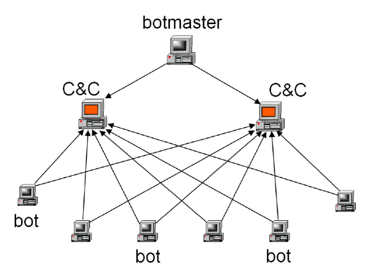

Bot Nets: An Overview
Posted by Louis "Mischa" Michael
Why I decided to write this post:
I was assigned to present on Christian Rossow et al., SoK: P2PWNED — Modeling and Evaluating the Resilience of Peer-to-Peer Botnets. It is a really interesting paper that I present on in early November, but as I was reading it and reviewing our class schedule I noticed that we don’t delve into a lot of the interesting background I explored while trying to understand the paper. The authors assume you have a fairly developed understanding of botnets, and even a little beyond this, have some exposure to the different large botnets. This post gives an overview of what botnets are and gives an overview that will help provide enough background to read further on the subject.
I found these sources really helpful and interesting:
Tillmann Werner - Prowling Peer to Peer Botnets After Dark -
https://www.youtube.com/watch?v=vxErDiSM_1Q
This was a really great DefCon talk that hits a lot of the points I make in this post.
GameOver Zeus: Badguys And Backends –
https://www.youtube.com/watch?v=KkEVwswqIBs
This Black Hat talk that really digs into a lot of the interesting law enforcement efforts that go into taking down botnets by stepping through a coordinated attack against GameOver Zeus, a P2P variant of the Zeus botnet.
What are Botnets:

Figure 1: The basic layout of a botnet
At a very basic level, a botnet is a series of computers that can take commands. This is done by installing a piece of malware on unwilling machines that implements a protocol to listen for and execute commands given by a command and control server (abbreviated C&C in the figure). These commands can range wildly based on the specific botnet, but should be basically thought of as generic code execution. It can fairly safely be assumed that any bot can be told to do anything, from making an http request, to intercepting information from a user on the machine, or even very destructive commands like wiping whatever box it is installed on.
The main thing that makes a botnet distinct from any other kind of malware is the fact that it is part of the IS command and control network, which means that once a box is owned it does not do one thing, it does whatever it is told. This lends itself really uniquely to have its services sold. In fact, one of the most common things botnets are used for is the further distribution of malware. They are also very commonly used for anything that requires distributed computing, such as distributed denial of service attacks, or mining crypto-currency. More on this in, “How They Are Used.”
Peer to Peer Botnets:

Figure 2: A Peer-to-Peer Botnet
The difference in peer to peer (P2P) botnets, like any P2P network, is their distributed nature. While at some level they still need to be in contact with a command and control server (frequently these are not actually individual servers but rather another P2P layer) in order to receive commands, this information can reach individual bots by being routed through peers. Different versions of this protocol vary in how specifically they spread information. Their distributed nature makes these botnets very tricky. Like any P2P network, they are very resilient and finding patterns in their communication becomes vastly more difficult, since there is no longer a well-defined location with which an individual box is communicating to take commands. Instead, it gives and receives information from a variety of known peers. Note the difference between Figure 1 and Figure 2 is that an individual bot is connected to other bots, not just command and control nodes.
Signs that a box is infected:
The name ‘Botnet,’ along with what we have discussed so far, tells us that they are networks, and must communicate in order to function. If you notice suspicious traffic to IPs that you don’t recognize, you should be concerned.
How they are used:
Botnets are not infrequently associated with organized crime, as when they are developed they functionally become a criminal asset unto itself, unlike most malware that are designed to collect information or execute commands on a single predefined vector. Botnets are used for whatever can make their owner money, and this is frequently by doing tasks for people willing to pay for their use. For example, if you have a hot new piece of malware that logs bank account logins, but you don’t know how to get it onto people’s computers. An easy fix for your problem is to put it up on a public download link and pay a bot master to have every bot in their botnet to go download your malware.
They are also frequently used for distributed denial of service (DDOS) attacks. Since the botnet consists of a variety of nodes at many different IPs, if they generate traffic to overwhelm a source it is very difficult to distinguish between bot traffic and legitimate traffic.

Figure 3: A botnet DDOS attack
How they are beaten:
A botnet is useless as soon as it can no longer have commands issued to it. A simple solution to this problem is to simply take down anywhere a botnet is listening for commands from, frequently this is accomplished by taking down command and control nodes. In the case of peer to peer botnets, it is frequently very difficult to determine what nodes are actually initiating commands since commands are propagated through peers. These networks are attacked using a “sinkhole.” This is when every peer a node knows is redirected to a node in the attacker’s control. This node will behave in much the same way another peer would, responding to heartbeats as to not be dropped from peer lists, but not passing commands, thus rendering the botnet useless.
Why Botnets can be tricky:
They basically flip the script. When researching botnets, you are trying to attack a network in many of the exact same ways that we have discussed about attacking networks in class, and they defend themselves in many of the same ways. They encrypt their traffic, they mask their intentions. People who understand computer security well enough to write malware can write malware that follows a lot of security best practices, and typically go above and beyond to make suspicious behavior look normal. They can also be updated on the fly. Since they can execute generic code, a very common occurrence is having bots update themselves. This means that if an attack is discovered a patch can be pushed to the rest of the network that protects against the attack. As a result, if an attack is discovered before it is fully executed it is frequently rendered useless.
Every bot net is a little different. When researchers talk about them they frequently refer to botnet families. This is the idea that roughly the same software with only a handful of changes are made, reusing large amounts of the code already in place for running a botnet. Usually a verity will pop up fixing a problem that took down its predecessor. On the whole, since lots of different people write this kind of malware frequently a non-negligible amount of time when researching a new one is dedicating to understanding the specific protocols and strategies it employs to communicate between nodes. These kinds of specifics are at times anything but small. Some botnets use IRC (Internet Relay Chat) to communicate, others use HTTP before even getting into individual commands or what nodes talk to which other nodes.
Take away:
Botnets are distributed malware that lets a third-party issue commands to a full network. This allows the purpose of the malware to be defined at some time later than install time. This leads to a really unique use of the networks, since they are capable of doing anything from installing other malware to patching themselves, they are harder to attack. Currently, most successful botnets are implemented as peer to peer networks. Peer to peer networks are distributed and resilient. This makes it much harder to fully identify the scope of the network, how it functions, and where commands originate. As a result, they are much harder to attack or take down. Lastly it can be a little overwhelming when reading about a lot of different verities or families all at once, just remember that the main differences of these are in how they communicate, who owns them, and as a result how they are used. From a cyber security stance, the most important differences in verities of botnets is in the specifics of how bots communicate to each other and receive commands.
Image Credits:
Figure 1 –
https://www.usenix.org/legacy/event/hotbots07/tech/full_papers/wang/wang_html/
Figure 2 –
https://www.slideshare.net/PratikNarang/feature-selection-for-detection-of-peer-topeer-botnet-traffic
CS/ECE 5584: Network Security, Fall 2017, Ning Zhang